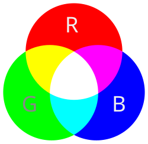
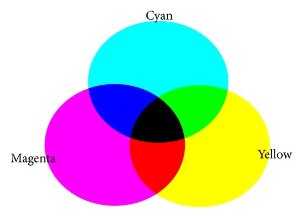

Een afbeelding bestaat uit pixels. Het is een samenvoeging van de woorden picture en element. Elk pixel is een vierkant hokje met zijn eigen kleur. Om het invallende licht op een camerasensor digtaal te kunnen opslaan in pixels wordt er gebruik gemaakt van kleurmodellen.
Een pixel bestaat uit drie lampjes: groen, rood en blauw. Deze lampjes kunnen feller en minder fel branden. De kleuren die je computer hiermee kan maken zijn gebasseerd op het RGB-model. Dus voor het weergeven van een plaatje op een beelscherm is dit model nodig. Het RGB-model is gemaakt voor een zwarte achtergrond, als je beeldscherm uitstaat staan de pixels ook uit. De lampjes zijn rood, groen en blauw, omdat dit de basis kleuren zijn en met deze drie kleuren kan je elke kleur maken die je wil. Een computer kan niet werken met procenten om aan te geven hoeveel die van een kleur nodig heeft, daarom gebruikt een computer decimale getallen van 0 tot 255 (pagina binairstelsel).
Als je foto wilt uitprinten doe je dat altijd op wit papier, maar als dan het GRB-model wordt gebruikt gaat dit fout. Dit komt, omdat het GRB-model is gebasseerd op een zwarte achtergrond. Daarom is er een andere model bedacht het CMY-model die bestaat uit de kleuren: cyaan, magenta en geel. Als je al deze kleuren samenmengt ontstaat er donkergrijs en geen zwart, daarom is zwart toegevoegd. Het CMYK-model.
